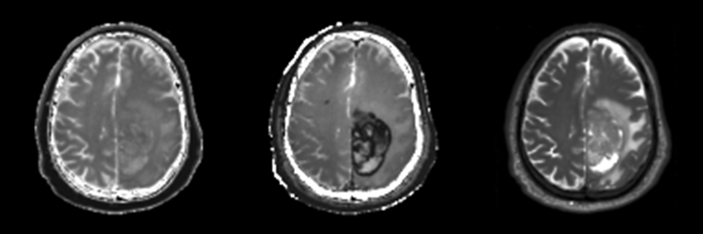

Segmentation of GBM Brain Tumors Yong Ik Jeong yongjeong2013@u.northwestern.edu EECS 349 Machine Learning Northwestern University Motivation Glioblastoma multiforme or GBM is a grade IV tumor that is found in the brain, and it is considered to be highly malignant with a very low chance of survival for the patient. It is difficult to find treatment, because there are many types of GBM tumors and certain treatment only work for a small subset of patients. In order to study the tumors and post-process them, region of interest or ROI have to be drawn on the medical image of the tumor by someone like a radiologist manually. And this process takes a lot of time and induces intra- and inter-reviewer variability. In this project, the goal was to use machine learning to automatically segment the GBM tumor from MRI images of the brain. Solution For this task, the MRI images were first pre-processed by co-registering the different types of images in each case and normalizing them. This was done to minimize misalignment of images and allow differently scaled cases to be used for analysis. The main focus of this task was on using supervised learning, namely, k-Nearest Neighbors and Support Vector Machines. The problem to solve was binary classification using continuous variables, so k-Nearest Neighbors and Support Vector Machines were good choices to use. The input features used for this task were the pixel intensity of three types of MR images (namely, T1-weighted image, T1-weighted image with contrast agent, and T2-weighted image), and the mean and standard deviation of corresponding voxel's neighborhood. The output feature was a binary tumor mask drawn manually. Figure 1 shows an example case of the three types of MR images.  Figure 1: Example of normalized version of T1-weighted image, T1-weighted image with contrast agent and T2-weighted image (from right to left).Training and Testing A total of 114 cases were used for this project, and each case consisted of the three types of images, tumor mask, and a brain mask. While 114 cases was probably not enough to capture and train on all kinds of tumors, each pixel corresponded to one instance so there were plenty of data points; for example, the number of instances in the training set was 674,268 and test set had 239,018 instances. The training set and test set were split by 75% and 25% of total cases. Using the training set, a 10-Nearest Neighbor model and a SVM model were trained. Then predictions were made using the test set and success was measured by overall accuracy across all instances and Dice-coefficient comparing the tumor region across all instances. Results Both the 10-Nearest Neighbor model and the SVM model performed better than a ZeroR (accuracy: 91%, Dice-coefficient: 0). The 10-NN model had an overall accuracy of 94.5% while the SVM model had 94.9%. On the other hand, the Dice-coefficient for the 10-NN model was 0.53 and 0.59 for the SVM model. The Dice-coefficient is the more important measure for this task, so SVM seemed to perform better than 10-NN. By looking through the cases visually, prediction seemed to be good for certain types of tumor while bad for other types. The best Dice coefficient was 0.87 and the worst was 0.04. Figure 2 shows an example case of a good prediction.  |